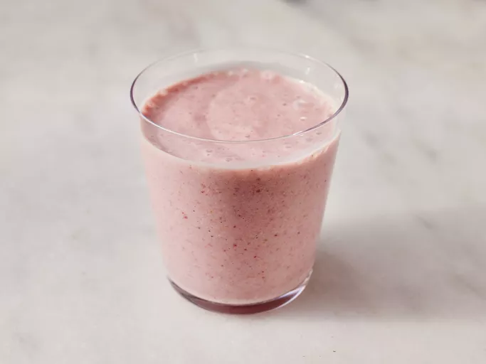

home
Strawberry Oatmeal Breakfast Smoothie

This vegan oatmeal smoothie has a deep pink color and a rich, creamy texture. It's very filling, and perfect for people in a rush in the morning. You don't have to give up a good breakfast when it's this fast to make! I use vitamin fortified soy milk.
Ingredients
- 1 cup soy milk
- ½ cup rolled oats
- 14 frozen strawberries
- 1 banana, broken into chunks
- 1 ½ teaspoons white sugar (Optional)
- ½ teaspoon vanilla extract (Optional)
Directions
- Gather ingredients.
- Blend soy milk, oats, strawberries, and banana in a blender until smooth. Add sugar and vanilla and blend again until smooth.
- Pour into glasses and serve.